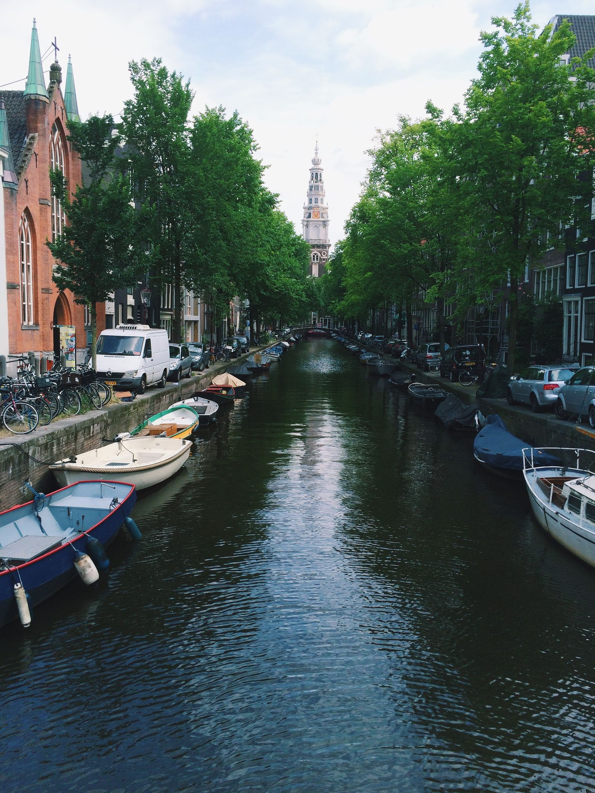

Sin tonterías ni jerga: SEO en holandés que sobrevive a la verificación cruzada en holandés.
Cuando alguien en los Países Bajos busca lo que usted vende, Google muestra primero tres empresas y luego el resto. Si no estás en ese primer grupo, la mayoría de las llamadas van a otro lado.
Los Países Bajos son un país pequeño con una economía digital descomunal, y los clientes holandeses buscan como lo hacen todo lo demás: directa, minuciosa y sin paciencia para tonterías. Comparan tres proveedores antes del desayuno, leen sus reseñas de una estrella antes que las de cinco estrellas y deciden en minutos. Si su empresa no es visible cuando buscan en holandés, usted no existe para ellos, porque no lo buscarán en la página dos. El mercado está concentrado y competitivo. Ámsterdam es el centro tecnológico, financiero y de startups donde las palabras clave de agencia y SaaS se disputan brutalmente. Róterdam pasa por el puerto, el más grande de Europa, y todo lo que lo rodea: logística, transporte, almacenamiento, servicios marítimos. La Haya es gobierno y organizaciones internacionales. Eindhoven es alta tecnología, anclada en el ecosistema de Philips y ASML. Utrecht, Groningen, Tilburg y Almere tienen cada una sus propias economías locales y sus propias búsquedas locales. El SEO holandés debe construirse ciudad por ciudad, porque "loodgieter Nederland" no es una búsqueda que cualquiera escriba, pero "loodgieter Rotterdam" sí lo es. El idioma es el primer filtro. Los holandeses hablan un inglés excelente, pero la búsqueda comercial se realiza en holandés: "beste", "goedkoopste", "bij mij in de buurt", "spoed". El holandés combina palabras en palabras clave largas y únicas, lo que cambia la forma en que se deben estructurar las páginas, y la redacción local difiere del holandés de los libros de texto. El SEO exclusivamente en inglés en los Países Bajos llega a los expatriados y a una porción del B2B, y pasa por alto casi por completo el mercado de consumo. Luego está la infraestructura fiduciaria, que está más formalizada aquí que en la mayoría de los países. Cada empresa obtiene un número KvK de la Cámara de Comercio, y los directorios holandeses obtienen sus listados a partir de él. Una empresa con datos consistentes de KvK, un perfil comercial completo de Google y reseñas en Google, Trustpilot y Klantenvertellen se considera legítima. Uno con datos no coincidentes y sin reseñas se considera un riesgo, y los compradores holandeses no se arriesgan con proveedores desconocidos. Los holandeses también son los primeros en adoptar: una de las tasas de penetración de Internet más altas de Europa, dispositivos móviles primero y nuevas funciones de búsqueda rápidas de usar. Google domina, el portal heredado Startpagina.nl todavía atrae tráfico y las respuestas basadas en inteligencia artificial están cambiando la forma en que se realizan las investigaciones. Mi trabajo aquí es sencillo, como el mercado mismo: una base técnica que es realmente sólida, investigación de palabras clave holandesas a partir de datos holandeses, una huella de citas limpia en los directorios que usan los clientes holandeses, un sistema de revisión que se adapta a los hábitos de compra holandeses y informes mensuales sencillos y sin jerga. Comienza con una auditoría gratuita que le muestra exactamente cuál es su situación.
Mantengo mi lista de clientes deliberadamente pequeña, de modo que cada negocio en los Países Bajos que emprendo tenga trabajo práctico y respuestas directas: sin colas de tickets, sin gerente de cuentas junior.

Cuatro escalones, construidos para el mercado holandés. Sin jerga, sin informes de 40 páginas que nunca leerás, solo el trabajo que mueve la aguja.
Una auditoría completa de su visibilidad en los Países Bajos: dónde se ubica, por qué los competidores lo superan y las tres soluciones más importantes.
Su perfil comercial de Google finalizó correctamente (categorías, servicios, fotos y publicaciones holandeses) por lo que convierte a los buscadores holandeses en personas que llaman.
Páginas de servicios y áreas escritas para cómo realizan búsquedas las personas en los Países Bajos, no para herramientas de palabras clave.
Un sistema simple que pregunta a los clientes holandeses satisfechos en el momento adecuado, para que tu número de reseñas siga creciendo mientras trabajas.
No soy una agencia con un equipo de ventas. Soy la persona que hace el trabajo y la que responde cuando preguntas qué está pasando.
Asumo un número limitado de empresas holandesas para que cada una reciba atención real, nunca repartidas en cincuenta cuentas.
Tu perfil, tu sitio, tu contenido. Sin bloqueos, sin inicios de sesión como rehenes, sin “sistemas propietarios” misteriosos: todo sigue siendo suyo.
Un plan mensual. Siempre sabrás exactamente lo que pagas y lo que obtienes: facturado de forma sencilla, cancelado de forma sencilla.
Las preguntas las responde la persona que realiza el trabajo, normalmente el mismo día. Intente conseguirlo en una agencia.
La clasificación en Holanda no se trata de trucos. se trata de siendo la respuesta más completa y confiable cuando un cliente local realiza una búsqueda: en su sitio web, en su perfil comercial de Google y en toda la web local.
Eso es lo que creo para las empresas holandesas: un perfil que parece vivo, páginas que coinciden con la forma en que la gente busca realmente aquí y un flujo de reseñas que sigue funcionando mientras usted administra su negocio.
Sin niveles, sin ventas adicionales, sin llamadas "empresariales". Un plan que cubre todo lo que una empresa holandesa necesita para ganar búsquedas locales.
Obtenga una auditoría SEO gratuita de su negocio en los Países Bajos: un desglose en inglés sencillo de lo que lo está frenando y exactamente lo que yo solucionaría primero.
Solicite mi auditoría gratuitaRespuestas directas a las preguntas que más escucho de los empresarios holandeses.
Necesita un registro KvK para operar como empresa en los Países Bajos y, si bien Google no requiere directamente el número para un perfil comercial, la capa de confianza que lo rodea es muy importante. Los directorios holandeses verifican los listados con los datos de KvK, los clientes holandeses los verifican y los nombres comerciales inconsistentes en su registro, sitio web y listados de KvK crean las discrepancias exactas que cuestan tanto las clasificaciones como la confianza. Mis auditorías alinean su huella pública con sus datos registrados desde el principio.
El listado correcto y gratuito es fundamental; las actualizaciones pagas rara vez lo son. De Telefoongids y Telefoonboek.nl son importantes como fuentes de citas que corroboran sus datos NAP para Google; ese valor proviene de la precisión, no del pago. Las ubicaciones pagas compran visibilidad en el propio directorio, que recibe un tráfico modesto en comparación con Google. Reclamo y corrijo todos los listados de directorios holandeses como parte del trabajo de citación, y sólo recomiendo ubicaciones pagas en directorios cuando el propio tráfico del directorio lo justifica para su negocio.
Holandés, para todo lo relacionado con el cliente. Los holandeses hablan un inglés excelente, pero realizan búsquedas en holandés: las consultas comerciales, los servicios locales y la investigación de productos se realizan en holandés. El contenido en inglés se clasifica entre consultas en inglés que apenas existen en el proceso de compra. La excepción es la tecnología B2B y las nuevas empresas en Ámsterdam, donde el inglés puede trabajar junto al holandés. Primero construyo el mapa de palabras clave a partir de consultas reales en holandés y luego aconsejo si las páginas en inglés son adecuadas para su audiencia específica.
No es un factor de clasificación, pero es un factor de conversión que hace o deshace el ROI de su SEO. iDEAL es el método de pago en línea dominante en Holanda, y los clientes holandeses lo esperan al momento de pagar; su ausencia se considera poco confiable y supone un obstáculo para la conversión. Las clasificaciones sin conversión son métricas de vanidad, por lo que mis auditorías verifican la plomería comercial (iDEAL, precios claros, señales de confianza) junto con el SEO técnico. El tráfico que no puedes convertir es sólo un costo.
Más que casi en cualquier lugar de Europa. Los compradores holandeses son famosos por comparar minuciosos: las reseñas de Google, Trustpilot y Klantenvertellen se revisan antes de casi cada compra, y los críticos holandeses escriben en detalle. Un perfil de reseña reducido no sólo pierde la comparación con el paquete de mapas, sino que también pierde la venta al competidor con cuarenta reseñas detalladas. Mi proceso de revisión pregunta en holandés en el momento adecuado con un enlace sin fricciones, y cada revisión recibe una respuesta directa y honesta, porque los clientes holandeses detectan instantáneamente la desviación corporativa.
También ayudo a empresas de los Países Bajos a posicionarse en Google.
"Respuesta muy rápida y mi problema se resolvió rápidamente. ¡Excelente servicio!"
"Hizo un gran trabajo. El primer enfoque no funcionó, pero después de algunos grandes ajustes funcionó mejor que nunca".
Reserve una llamada estratégica gratuita de 30 minutos. Auditaré su visibilidad en los Países Bajos en vivo y mostraré exactamente lo que se necesitaría para llegar al top 3.